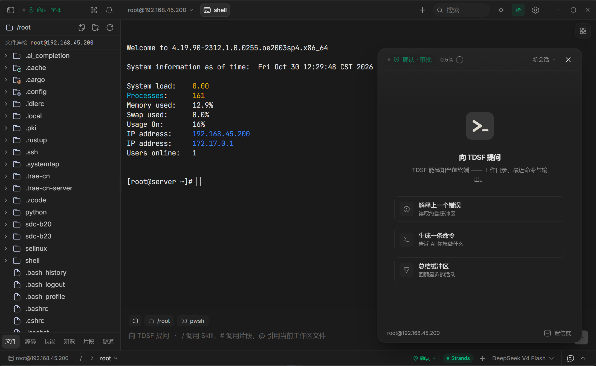

01 / Perceive
Read the environment
Workspace, connected host, distribution family, recent terminal output and command blocks enter context before each turn.
Terminal · SSH · AI Agent
Commands are typed into your real shell and echoed at the prompt. Writes are classified, gated by an approval card, and reported with their real exit code. Local, WSL and SSH — one window.

Remote file tree · real terminal · AI operations assistantWindows x64 · Tauri 2 + Rust · Strands Agent
Execution Loop
The agent does not hand you a command to copy. It writes into the PTY / SSH channel of the current session, lets the remote shell echo it, then ties the real output back to the tool card that produced it.
Workspace, connected host, distribution family, recent terminal output and command blocks enter context before each turn.
Multi-step work starts as a task list synced to the top of the conversation; the loop shows "turn N · M tools used".
In visible mode the command is written character by character and echoed at the prompt; a background SSH channel is also available.
Every write asks for a read-only verification; output, exit code and duration join the evidence chain, and a non-zero exit is always a failure.
Conversations in one workspace share long-term memory: session summaries and successful troubleshooting cases are stored and recalled later.
Capabilities
Terminal, remote hosts, AI assistant, knowledge base and teaching flow share one environment context — no copying facts between tools.
cwdTrust Modes
Modes are not prompt-level suggestions: observe mode removes write-capable tools from the schema, so the model cannot call a tool it never received.
| Mode | What the agent may do | Where it fits |
|---|---|---|
| Observe | Read-only analysis; write-capable tools removed from the toolset | Production inspection |
| Confirmdefault | Full toolset; recognised read-only queries run directly, unknown and state-changing calls raise an approval card each | Day-to-day operations, human in the loop |
| Auto | Low-risk (L0–L2) runs directly; L3/L4 still need approval and the hard rules cannot be bypassed | Trusted sandbox |
| Teach | Observe permissions plus the teaching UI; one single-step command card at a time, continuing after the real result returns | Classroom and self-study |
Safety Model
Blocking, approval, circuit breaking and redaction are four independent lines of defence. None of them relies on the model's good intentions.
Risk classification and approval are not an operating-system sandbox: the local Python tool runs in a subprocess, and setting its working directory does not restrict all of its filesystem or network access.
In Action
Connect a server → the agent types the command into the real terminal → the approval card gates it → real output returns to the tool card → teaching mode runs it one step at a time.
The demo video could not load. Please refresh and try again.
cwd; drag a file to uploadArchitecture
System capability stays in Rust, interaction stays in the frontend, and AI reasoning plus knowledge retrieval live in a Python process that can be restarted on its own.
Verification
Test counts move with the implementation, so no single run's numbers are treated as a feature claim.
| Gate | Scope | Release requirement |
|---|---|---|
| pytest | Python sidecar (agent, tools, approvals, knowledge) | Full suite passes |
| vitest | Frontend state, interaction and render contracts | Full suite passes |
| cargo test | Rust shell (PTY, SSH, typing engine, tunnels) | Full suite passes |
| tsc / eslint | Types and static checks | Zero errors, zero warnings |
Pending native desktop acceptance (requires a real SSH server and saved connection profiles): connect and history restore, per-session approval FIFO, the teaching command closed loop across success / non-zero exit / timeout / parallel cards, and distribution-aware completion.
Get Started
Requirements: Node.js ≥ 20, pnpm ≥ 9, stable Rust, Python ≥ 3.12.
# 1. install frontend dependencies pnpm install # 2. start the desktop app (first build takes 2–5 min) pnpm tauri:dev # on Windows you can also double-click 启动.bat
Runs from source today, with a Windows installer available. The installer is not Authenticode-signed yet, so SmartScreen may warn on first run — verify the SHA-256 first. See Releases for the latest build.
Documentation